Introducción a la unidad - objetivo
Unidad 2. Escuelas del pensamiento administrativo
Introducción a la unidad
La administración se ha transformado a lo largo del tiempo gracias a diferentes escuelas de pensamiento, cada una desarrollada para explicar y atender distintos problemas de las organizaciones.
Algunas centraron su atención en la experiencia, otras en la eficiencia del trabajo, la estructura y funciones administrativas, las personas y su comportamiento, el uso de métodos cuantitativos o la organización entendida como un sistema y una estructura social.
En esta unidad conoceremos las principales escuelas administrativas para comprender qué aportó cada una y cómo contribuyeron al desarrollo de la administración actual.
Objetivo de la unidad
Comprender las principales escuelas del pensamiento administrativo, identificando sus características y aportaciones para reconocer cómo cada enfoque contribuyó a explicar y mejorar el funcionamiento de las organizaciones.
El recorrido de esta unidad será:
Escuela empírica → Escuela científica → Escuela administrativa → Escuela humano-realista → Escuela neo-humano-realista → Escuela matemática → Escuela sistemática → Escuela estructuralista.
Al finalizar la unidad, el estudiante podrá distinguir los diferentes enfoques administrativos y relacionar sus principales aportaciones con situaciones de una organización.
2.1 Escuela empírica
2.1 Escuela empírica
La Escuela Empírica considera que la experiencia constituye una fuente importante de conocimiento para la administración.
Su enfoque consiste en observar y analizar situaciones que ya ocurrieron, identificar las decisiones tomadas y aprender de sus resultados para enfrentar situaciones futuras.
Aprender de la experiencia
Cuando un administrador enfrenta un problema, puede apoyarse en experiencias anteriores propias o de otras organizaciones.
El proceso puede entenderse de forma sencilla:
Experiencia → Análisis → Aprendizaje → Decisión
Por ejemplo, una empresa selecciona un proveedor únicamente porque ofrece el precio más bajo. Posteriormente enfrenta retrasos y problemas de calidad.
La siguiente vez que necesite contratar un proveedor, podrá utilizar esa experiencia para considerar también aspectos como calidad, cumplimiento y tiempo de entrega.
La experiencia se convierte así en conocimiento útil para tomar mejores decisiones.
El estudio de casos
Esta escuela también utiliza el análisis de casos administrativos. Al estudiar una situación empresarial podemos identificar:
Qué ocurrió → qué decisión se tomó → qué resultado produjo → qué podemos aprender.
Esto permite desarrollar el criterio del administrador y prepararlo para enfrentar situaciones similares.
Un punto importante
Aprender de una experiencia no significa copiar exactamente una solución.
Las empresas pueden tener diferentes recursos, trabajadores, clientes y condiciones. El administrador debe utilizar la experiencia como referencia y después adaptarla a la situación que enfrenta.
La Escuela Empírica propone aprender de la experiencia y de los casos administrativos para orientar futuras decisiones, sin olvidar que cada situación debe analizarse de acuerdo con su propio contexto.
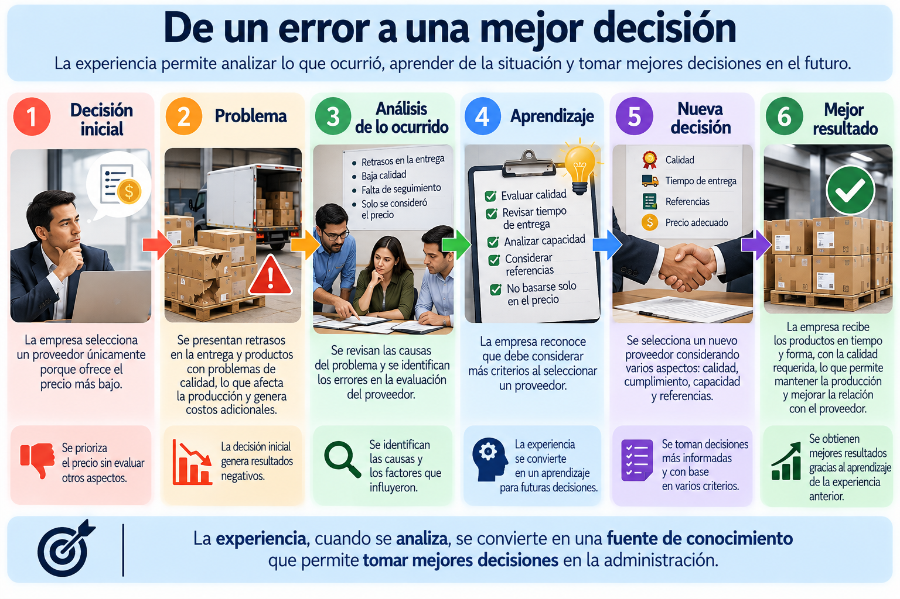
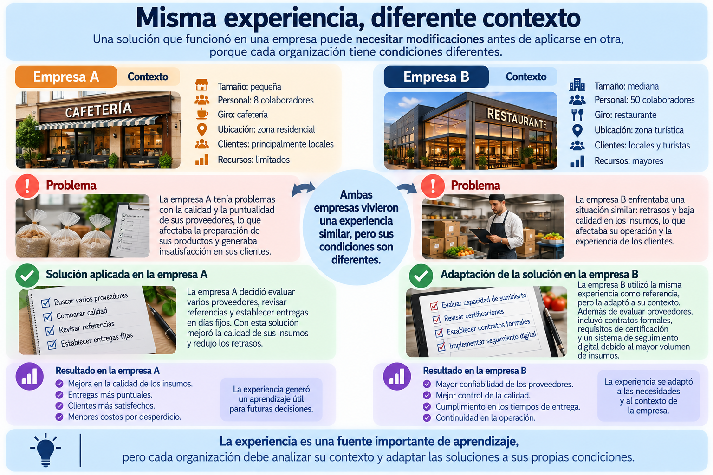
2.2 Escuela científica
2.2 Escuela científica
La Escuela Científica de la Administración surgió ante la necesidad de encontrar formas más eficientes de realizar el trabajo, especialmente en las fábricas.
Su principal representante fue Frederick Winslow Taylor, quien propuso estudiar las actividades de los trabajadores de manera sistemática para determinar cómo realizar una tarea de una forma más eficiente.
¿Qué buscaba mejorar?
En muchas fábricas, el trabajo se realizaba de acuerdo con la experiencia de cada trabajador. Esto podía provocar diferencias en los métodos utilizados, tiempos innecesarios, desperdicio de materiales y baja productividad.
La Administración Científica propuso observar, medir y analizar el trabajo antes de establecer la mejor manera de realizarlo.
Principales aportaciones
Estudio de tiempos y movimientos
Analizar cuánto tiempo requiere una actividad y qué movimientos son realmente necesarios para realizarla.
Estandarización del trabajo
Establecer procedimientos definidos para que una actividad se realice de manera ordenada y consistente.
Selección y capacitación del trabajador
Asignar a las personas de acuerdo con las características del puesto y capacitarlas para realizar correctamente sus tareas.
División y especialización del trabajo
Distribuir las actividades para que cada trabajador pueda concentrarse en determinadas funciones.
Productividad
Buscar mejores resultados utilizando adecuadamente el tiempo, los materiales y el esfuerzo.
Un ejemplo
Imaginemos una empresa que fabrica muebles.
Cada trabajador arma una silla de manera diferente y utiliza distintas herramientas. Algunos terminan rápidamente, mientras que otros tardan mucho más.
Desde el enfoque científico, la empresa puede observar el proceso, medir los tiempos, identificar movimientos innecesarios y establecer un procedimiento de trabajo.
Después, los trabajadores reciben capacitación para aplicar ese procedimiento.
El propósito no es simplemente trabajar más rápido, sino organizar mejor la forma de realizar el trabajo.
Taylor y la Administración Científica
Frederick W. Taylor (1856–1915) es considerado uno de los principales representantes de este enfoque.
Su propuesta buscó sustituir la improvisación por el estudio sistemático del trabajo, utilizando observación y medición para mejorar la eficiencia.
Sus ideas tuvieron una gran influencia en la organización de la producción y posteriormente fueron complementadas por otros autores.
La Escuela Científica estudia cómo se realiza el trabajo para encontrar métodos más eficientes, reducir desperdicios y mejorar la productividad.
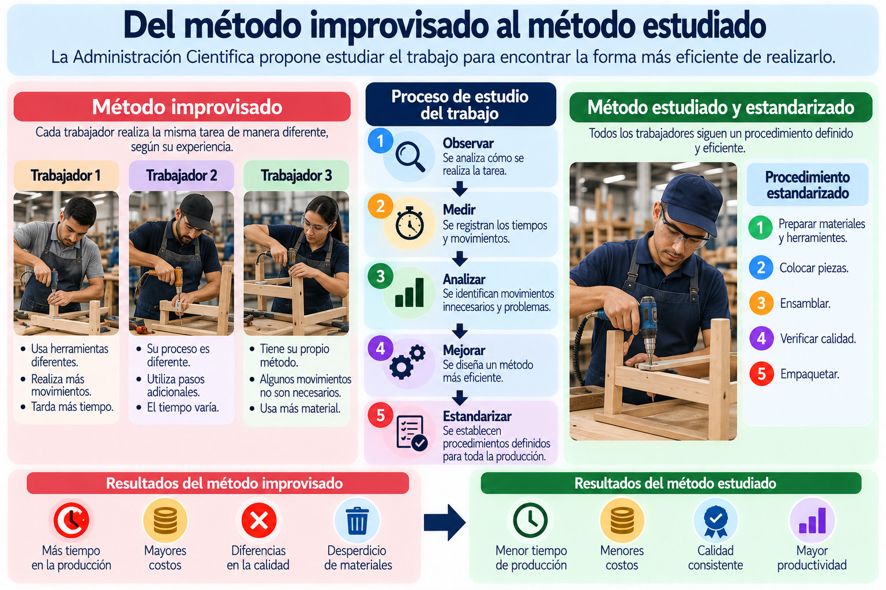
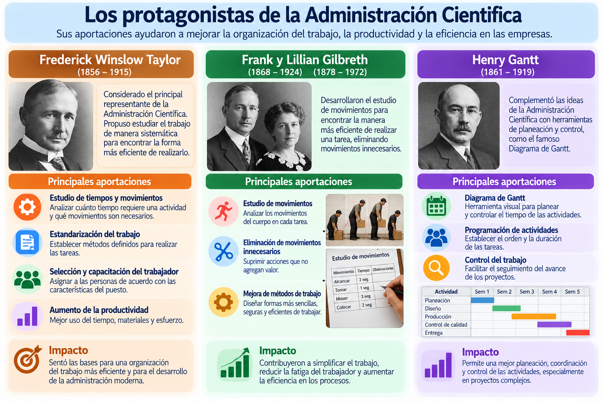
2.3 Escuela administrativa
2.3 Escuela administrativa
La Escuela Administrativa, también conocida como Teoría Clásica de la Administración, estudia principalmente cómo debe organizarse y administrarse una empresa en su conjunto.
Su principal representante fue Henri Fayol, quien observó que administrar requería realizar determinadas funciones y establecer principios que ayudaran a coordinar adecuadamente una organización.
Mientras la Escuela Científica se concentró principalmente en cómo mejorar el trabajo y la productividad, la Escuela Administrativa amplió la mirada hacia la dirección y organización de toda la empresa.
Las funciones de la administración
Fayol identificó funciones administrativas que posteriormente sirvieron como base para el desarrollo del proceso administrativo.
Podemos comprenderlas de manera sencilla:
Planear: determinar qué se quiere lograr y anticipar las acciones necesarias.
Organizar: distribuir actividades, responsabilidades y recursos.
Dirigir: orientar y coordinar a las personas para realizar el trabajo.
Coordinar: integrar los esfuerzos de las diferentes áreas y personas.
Controlar: verificar que las actividades se desarrollen conforme a lo establecido y corregir desviaciones.
Estas funciones permitieron entender que administrar es un proceso continuo, no una actividad aislada.
Los principios administrativos
Fayol también propuso 14 principios de administración como orientaciones para organizar y dirigir una empresa.
Entre ellos encontramos la división del trabajo, autoridad y responsabilidad, disciplina, unidad de mando, unidad de dirección, orden, equidad y espíritu de equipo.
Estos principios no deben entenderse como reglas rígidas para todas las situaciones, sino como referencias para favorecer el orden y la coordinación dentro de una organización.
Un ejemplo
Una empresa comienza a crecer y pasa de 10 a 60 trabajadores.
Al principio todos realizaban diferentes actividades, pero con el crecimiento comienzan los problemas: algunas tareas se duplican, los trabajadores reciben instrucciones de varias personas y nadie sabe claramente quién tiene determinadas responsabilidades.
Desde el enfoque administrativo sería necesario definir funciones, establecer niveles de autoridad, distribuir responsabilidades y coordinar las diferentes áreas.
Así, el crecimiento de la empresa requiere también una mejor estructura administrativa.
La Escuela Administrativa estudia cómo organizar y dirigir la empresa en su conjunto mediante funciones y principios que permitan coordinar personas, actividades y recursos.
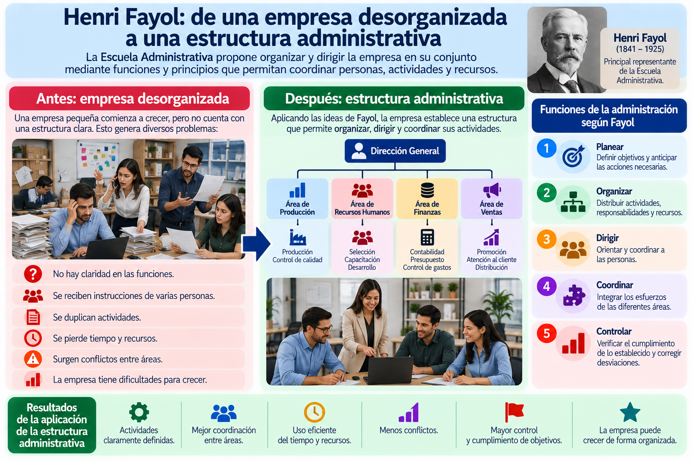
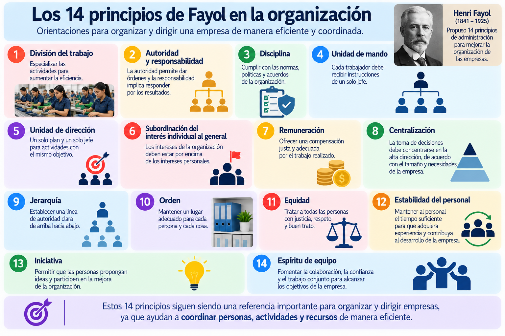
2.4 Escuela humano-realista
2.4 Escuela humano-realista
La Escuela Humano-Realista, también relacionada con el enfoque de las Relaciones Humanas, cambió la manera de estudiar a las organizaciones al dirigir la atención hacia las personas y las relaciones sociales en el trabajo.
Los enfoques anteriores habían dado especial importancia a la productividad, los métodos y la estructura. Esta escuela mostró que el funcionamiento de una organización también depende de cómo se sienten, se relacionan y participan las personas que trabajan en ella.
Elton Mayo y los estudios de Hawthorne
Uno de sus principales representantes fue Elton Mayo (1880–1949).
Los conocidos estudios de Hawthorne, realizados en la planta Western Electric, analizaron diferentes condiciones de trabajo y ayudaron a observar que el comportamiento y rendimiento de los trabajadores no dependían únicamente de factores físicos o económicos.
También intervenían aspectos como las relaciones entre compañeros, la atención recibida, la comunicación y la pertenencia al grupo.
Esto permitió ampliar la visión del trabajador: ya no debía considerarse solamente como una persona que ejecuta tareas, sino como un ser social que forma parte de grupos y establece relaciones dentro de la organización.
El grupo dentro de la organización
En el lugar de trabajo se forman relaciones entre compañeros que pueden influir en la conducta individual.
Los grupos desarrollan formas de comunicación, colaboración y ciertas normas informales que pueden influir en la manera de trabajar.
Por ello, el administrador necesita comprender tanto la estructura formal de la empresa como las relaciones humanas que se generan dentro de ella.
¿Qué aportó este enfoque?
La Escuela Humano-Realista permitió dar mayor importancia a aspectos como:
Comunicación entre las personas
Relaciones interpersonales
Trabajo en grupo
Participación de los trabajadores
Ambiente social de trabajo
Esto ayudó a comprender que los resultados de una organización no dependen exclusivamente de procedimientos y estructuras.
Ejemplo
Dos departamentos tienen recursos, horarios y procedimientos similares.
En el primero existe poca comunicación y frecuentes conflictos. En el segundo, los trabajadores colaboran, intercambian información y existe una buena relación con el supervisor.
Aunque las condiciones técnicas sean parecidas, la dinámica humana puede generar resultados diferentes.
La Escuela Humano-Realista incorporó el factor humano al estudio de la administración, destacando la influencia de las relaciones sociales y los grupos en el comportamiento dentro del trabajo.
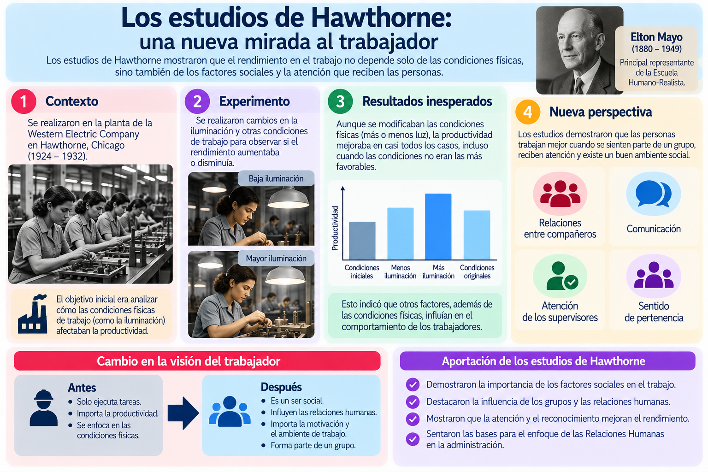
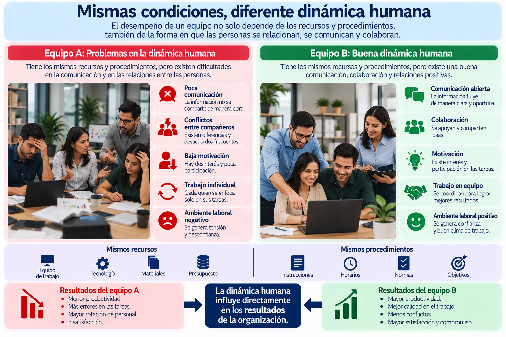
2.5 Escuela neo-humano-realista
2.5 Escuela neo-humano-realista
La Escuela Neo-Humano-Realista profundiza en el estudio de las personas dentro de las organizaciones. Su interés principal está en comprender qué motiva a las personas, por qué se comportan de determinada manera y cómo el liderazgo puede influir en su desempeño.
Mientras la Escuela Humano-Realista destacó principalmente las relaciones sociales y los grupos, este enfoque avanzó hacia el estudio de las necesidades, motivaciones y comportamiento individual.
La motivación en el trabajo
Las personas no trabajan únicamente por una remuneración económica. También pueden buscar seguridad, reconocimiento, pertenencia, desarrollo y oportunidades de crecimiento.
Comprender estas necesidades ayuda al administrador a identificar por qué dos personas pueden reaccionar de manera diferente ante las mismas condiciones laborales.
Por ejemplo, un trabajador puede valorar principalmente la estabilidad, mientras otro puede sentirse más motivado por asumir nuevas responsabilidades y desarrollarse profesionalmente.
Abraham Maslow
Abraham Maslow (1908–1970) propuso una teoría sobre las necesidades humanas que posteriormente tuvo una importante aplicación en el ámbito organizacional.
Su modelo organiza las necesidades en diferentes niveles:
Fisiológicas → Seguridad → Sociales → Estima → Autorrealización
La idea fundamental es que las personas poseen diferentes necesidades que influyen en su comportamiento y motivación.
En el trabajo podemos relacionarlas con aspectos como remuneración suficiente para necesidades básicas, estabilidad laboral, pertenencia a un equipo, reconocimiento y oportunidades de desarrollo.
Douglas McGregor
Douglas McGregor (1906–1964) estudió cómo las ideas que los administradores tienen acerca de sus trabajadores pueden influir en la manera de dirigirlos.
Propuso dos perspectivas:
Teoría X: supone que las personas evitan el trabajo, requieren supervisión constante y necesitan ser controladas.
Teoría Y: considera que las personas pueden asumir responsabilidades, participar, aprender y comprometerse con los objetivos cuando existen condiciones adecuadas.
McGregor no pretendía simplemente clasificar trabajadores en dos tipos; buscaba mostrar que la forma en que un administrador percibe a las personas puede influir en su estilo de dirección.
Aplicación en la administración
Un administrador que comprende el comportamiento humano no se limita a preguntar:
“¿Cómo hago para que trabajen más?”
También puede preguntarse:
“¿Qué necesita mi equipo para desempeñarse mejor?”
Esto dirige la atención hacia factores como la motivación, el reconocimiento, la participación, el liderazgo y las oportunidades de desarrollo.
La Escuela Neo-Humano-Realista busca comprender las necesidades y motivaciones de las personas para favorecer su desarrollo y desempeño dentro de la organización.
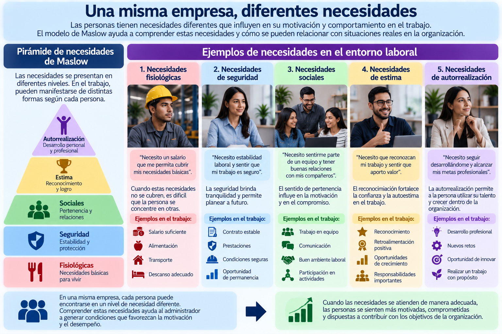
2.6 Escuela matemática
2.6 Escuela matemática
La Escuela Matemática de la Administración propone utilizar datos, cálculos y modelos cuantitativos para apoyar la toma de decisiones dentro de las organizaciones.
Este enfoque resulta especialmente útil cuando el administrador necesita comparar varias alternativas y decidir cómo utilizar mejor recursos como dinero, tiempo, materiales, personal o capacidad de producción.
De la intuición a los datos
Un administrador puede tener experiencia e intuición, pero cuando enfrenta decisiones complejas necesita información que le permita analizar las alternativas.
Por ejemplo, una empresa debe decidir cuánto producto fabricar para satisfacer la demanda sin generar demasiado inventario.
En lugar de decidir únicamente por experiencia, puede revisar:
Demanda esperada → capacidad de producción → costos → inventario disponible → alternativas
Con esos datos puede seleccionar una opción más conveniente.
¿Qué herramientas utiliza?
Dentro de este enfoque se desarrollaron diferentes herramientas cuantitativas. Para una introducción a la administración, las más importantes son:
Investigación de operaciones: utiliza modelos para encontrar alternativas eficientes ante problemas administrativos.
Estadística: permite recopilar, organizar y analizar datos para apoyar decisiones.
Control de inventarios: ayuda a determinar cuánto producto o material conviene mantener disponible.
Teoría de colas: analiza situaciones donde existen tiempos de espera, como clientes esperando atención.
Programación y planificación: permite organizar actividades, tiempos y recursos.
Simulación: permite representar diferentes escenarios antes de tomar una decisión real.
Ejemplo
Una cafetería prepara diariamente 100 sándwiches, pero normalmente vende alrededor de 70.
Esto significa que aproximadamente 30 pueden quedar sin vender.
En lugar de continuar produciendo la misma cantidad todos los días, el administrador puede revisar las ventas anteriores y analizar la demanda por día.
Puede descubrir, por ejemplo, que:
Lunes a jueves → demanda aproximada de 65 a 75
Viernes → demanda aproximada de 90
Con esa información puede ajustar la producción de acuerdo con el comportamiento de la demanda.
Aquí las matemáticas no sustituyen al administrador. Le proporcionan información para tomar una decisión mejor fundamentada.
Optimizar no siempre significa producir más
Este punto es importante para el alumno.
La Escuela Matemática busca optimizar los recursos, pero optimizar no necesariamente significa aumentar la producción.
En algunos casos la mejor decisión puede ser:
producir menos, reducir inventario, modificar horarios, utilizar menos recursos o cambiar la distribución del trabajo.
Lo importante es encontrar una alternativa que permita obtener mejores resultados considerando las condiciones y restricciones existentes.
Los números no toman la decisión. Los números aportan información para que el administrador tome una mejor decisión.
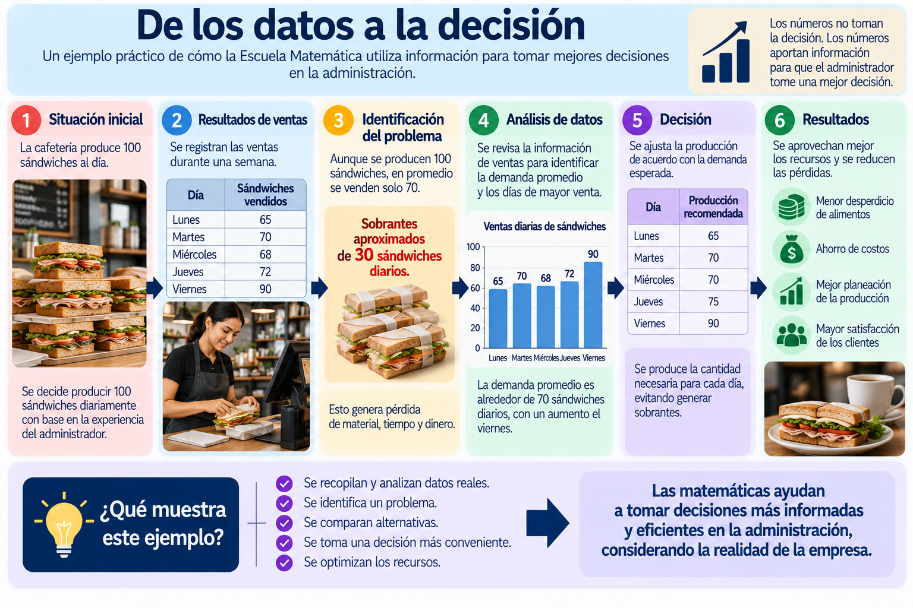
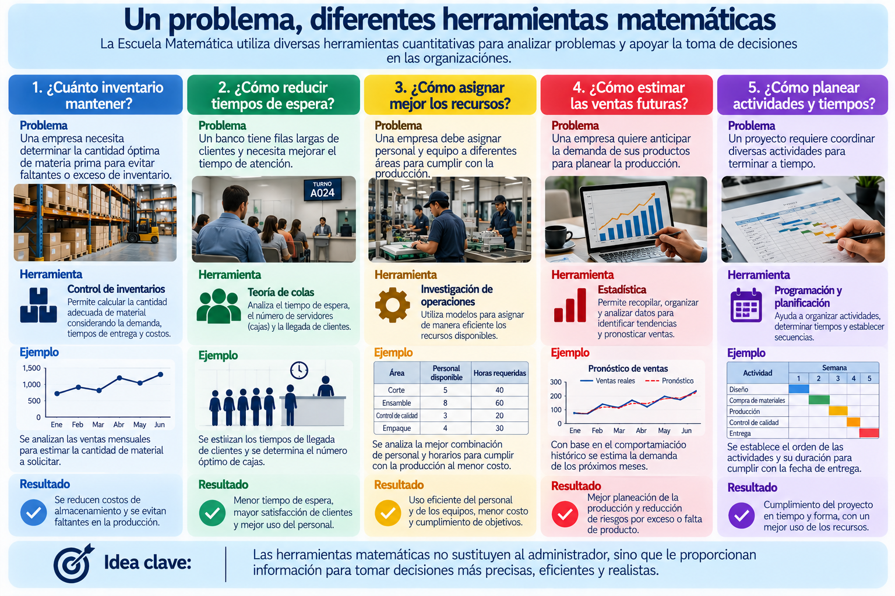
2.7 Escuela sistemática
2.7 Escuela sistemática
La Escuela Sistemática propone comprender a la organización como un sistema formado por diferentes partes que están relacionadas entre sí.
Esto significa que una empresa no debe analizarse únicamente por departamentos separados. Producción, ventas, finanzas, recursos humanos y otras áreas dependen unas de otras, y lo que sucede en una puede afectar al resto.
La organización como sistema abierto
Una organización se considera un sistema abierto porque mantiene una relación constante con su entorno.
Recibe recursos del exterior, los transforma mediante sus actividades y posteriormente genera resultados.
Podemos entenderlo así:
ENTRADAS → TRANSFORMACIÓN → SALIDAS → RETROALIMENTACIÓN
Entradas: personas, materiales, dinero, tecnología e información.
Transformación: actividades y procesos mediante los cuales la organización utiliza esos recursos.
Salidas: productos, servicios, resultados e información.
Retroalimentación: información obtenida sobre los resultados que permite realizar ajustes y mejoras.
Las áreas son interdependientes
Uno de los puntos más importantes de este enfoque es la interdependencia.
Por ejemplo, una empresa recibe un pedido importante.
Ventas informa la cantidad solicitada → Producción revisa su capacidad → Compras consigue materiales → Recursos Humanos verifica el personal disponible → Finanzas revisa los recursos económicos → Distribución organiza la entrega.
Si una de estas partes falla, puede afectar el resultado de todo el sistema.
El entorno también influye
La empresa no funciona de manera aislada.
Factores externos como clientes, proveedores, competencia, tecnología, economía y disposiciones gubernamentales pueden generar cambios dentro de la organización.
Por ejemplo, si un proveedor deja de entregar un material indispensable, no solamente se afecta el área de compras. También puede detenerse la producción, retrasarse una venta y modificarse el flujo de dinero.
Ludwig von Bertalanffy
El enfoque sistemático tiene como antecedente importante la Teoría General de Sistemas, desarrollada por Ludwig von Bertalanffy (1901–1972).
Su planteamiento permitió estudiar diferentes fenómenos como conjuntos de elementos relacionados y posteriormente influyó en la manera de analizar las organizaciones.
La Escuela Sistemática entiende a la organización como un conjunto de partes interdependientes que interactúan entre sí y con su entorno para alcanzar objetivos.
2.8 Escuela estructuralista
2.8 Escuela estructuralista
La Escuela Estructuralista estudia a la organización considerando tanto su estructura formal como las personas y relaciones que se desarrollan dentro de ella.
Este enfoque busca comprender cómo se distribuyen la autoridad, las responsabilidades, las normas y los niveles jerárquicos, pero también reconoce que dentro de una organización surgen grupos y relaciones que no siempre están establecidos oficialmente.
Estructura formal e informal
Dentro de una organización podemos encontrar dos formas de relación.
Estructura formal: es la establecida oficialmente por la organización. Incluye puestos, departamentos, jerarquías, responsabilidades, procedimientos y líneas de autoridad.
Por ejemplo:
Dirección → Gerencias → Supervisores → Personal operativo
Estructura informal: surge de manera natural entre las personas a partir de la convivencia cotidiana, la confianza, la comunicación y los intereses compartidos.
Por ejemplo, trabajadores de diferentes departamentos pueden apoyarse e intercambiar información aunque esa relación no aparezca en un organigrama.
Ambas estructuras pueden influir en el funcionamiento de la organización.
Autoridad y jerarquía
El estructuralismo también presta atención a la manera en que se distribuye la autoridad.
En una organización es necesario saber:
Quién toma decisiones → quién tiene determinadas responsabilidades → quién reporta a quién → cómo se coordinan los diferentes niveles.
Cuando estas relaciones no están claras pueden aparecer duplicidad de funciones, instrucciones contradictorias y conflictos.
Max Weber y la burocracia
Un antecedente importante para este enfoque fue Max Weber (1864–1920) y su análisis de la burocracia como una forma racional de organización.
Entre sus características se encuentran:
División clara del trabajo
Cada puesto tiene funciones determinadas.
Jerarquía de autoridad
Existen diferentes niveles de responsabilidad y mando.
Reglas y procedimientos
Las actividades se realizan siguiendo normas establecidas.
Impersonalidad
Las decisiones deben fundamentarse en criterios establecidos y no únicamente en preferencias personales.
Competencia profesional
Los puestos requieren conocimientos y capacidades determinadas.
Aquí, burocracia no significa simplemente exceso de trámites. En el análisis de Weber se refiere a una forma de organizar racionalmente funciones, autoridad y reglas.
Ejemplo
Una empresa comenzó con 12 trabajadores y posteriormente creció hasta tener 85.
Cuando era pequeña, el propietario podía hablar directamente con todos. Al crecer comienzan los problemas: algunas personas reciben instrucciones de diferentes jefes, ciertas funciones se duplican y no existe claridad sobre quién puede tomar determinadas decisiones.
Desde una perspectiva estructuralista sería necesario analizar puestos, niveles de autoridad, responsabilidades, reglas y relaciones entre los grupos para comprender cómo está funcionando realmente la organización.
La Escuela Estructuralista analiza cómo están organizadas la autoridad, las funciones y las relaciones dentro de una organización, considerando tanto su estructura formal como las relaciones informales.
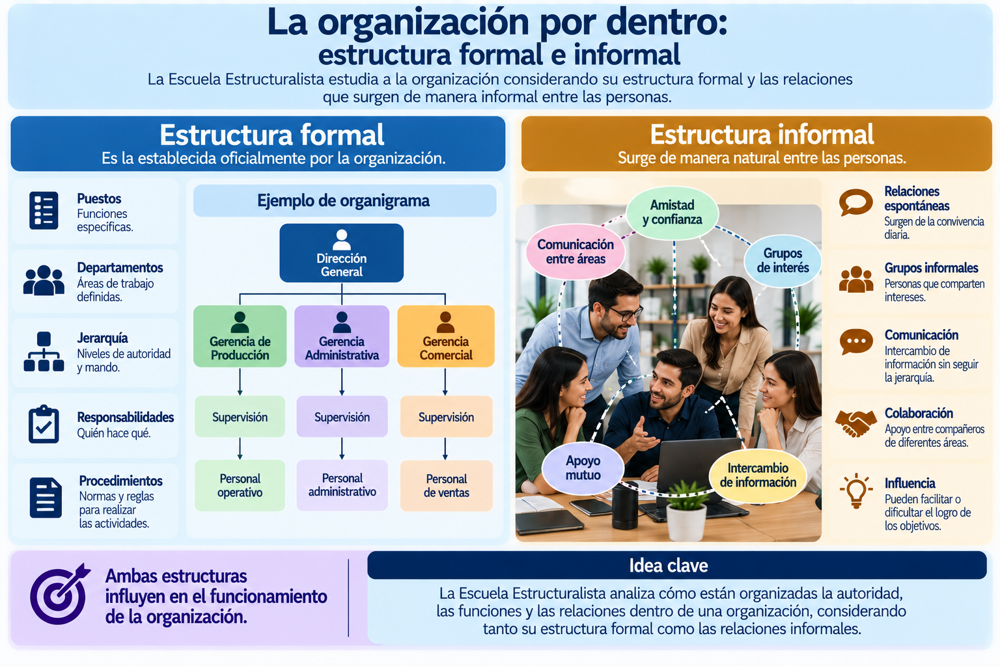
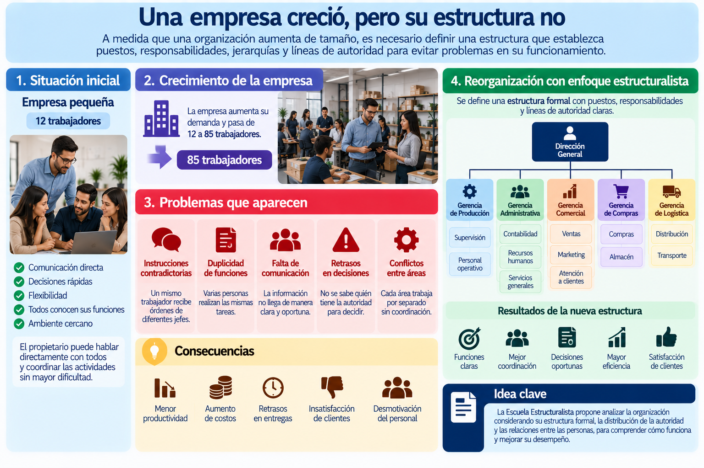